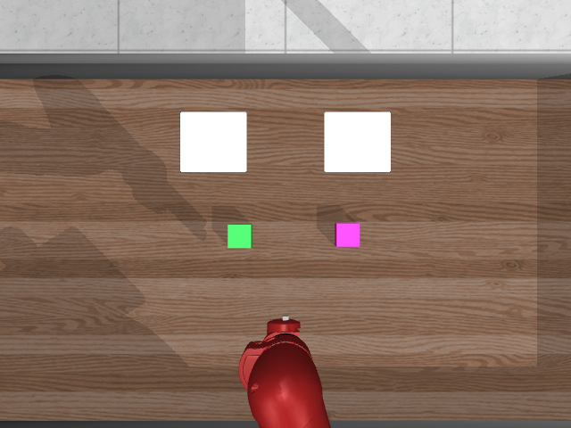
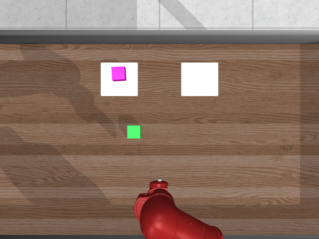
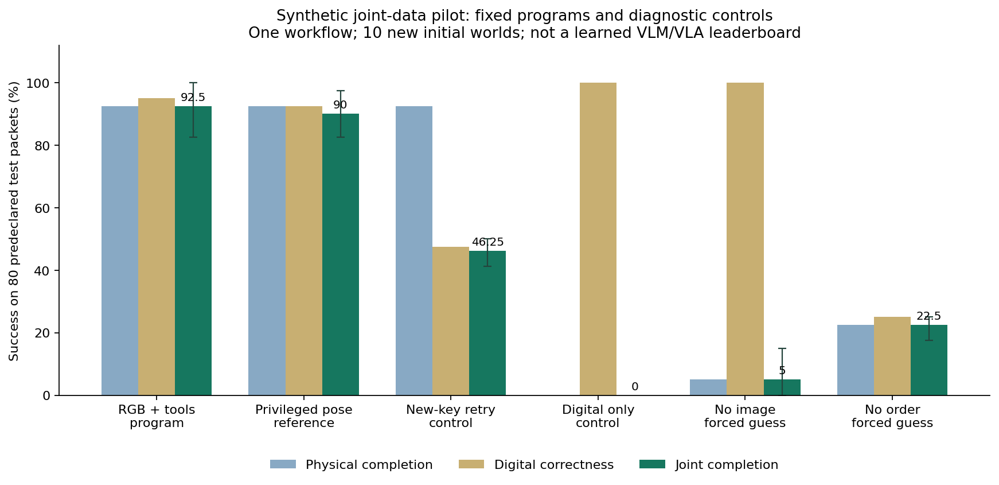

目前主设计是全面收集前作、survey分类、任务联集与任务／规则扩充。本页保留已完成的小型工程实验。
回到Benchmark总库与研究主线 →数据已接起来：图像、工具与机器人一起验收
这是一批实际生成、运行和重播的合成数据。从订单找料件、用RGB定位、推到指定区，再检查SQLite与物理终态是否一致。
在只有本机Mac的条件下，已造出可重现的RGB—entity—数据库—控制—判分完整链。数据是合成订单和模拟料件，物理动作与SQL写入确实运行过。场景只有两种颜色的刚性方块、固定相机和一只Sawyer臂；没有真人视频或学习型agent成绩。
120是测例数，不是120种新G2。大规模、广覆盖与2×目标仍待完成。
同一张初态图像，换订单与处理方式会怎样
展示预先指定的第一个验证初态（seed 701）。其四种目标、两种故障条件和六个程序结果全部可切换；全80测例另有完整下载。


可以选「只更新数据库」看数字成功但物理失败；选回应遗失与「改key重试」，可看到料件送达但数据重复。这些是刻意设计的诊断控制，不是学习模型排名。
80个新初态测例的原始程序结果
六个程序均使用同一组80测例。侦测器、动作控制器与原定程序在验证前冻结，程序例外也没有删除。真值位置参考不是性能上界；两组缺信息控制刻意猜测，不能作公平的模型能力比较。
| 程序／诊断控制 | 物理成功 | 数字正确 | 联合成功 | 程序例外 |
|---|---|---|---|---|
| 完整RGB＋工具程序 | 92.50% | 95.00% | 92.50% | 2 / 80 |
| 对象真值位置参考 | 92.50% | 92.50% | 90.00% | 4 / 80 |
| 回应遗失后改key重试 | 92.50% | 47.50% | 46.25% | 2 / 80 |
| 只更新数据库 | 0.00% | 100.00% | 0.00% | 0 / 80 |
| 有订单、无图像（强制猜位置） | 5.00% | 100.00% | 5.00% | 0 / 80 |
| 有图像、无订单（强制猜目标） | 22.50% | 25.00% | 22.50% | 0 / 80 |

实际动作重播与交易恢复
视频由保存动作重播，右栏依实际工具事件显示SQL写入。最后停格供阅读，不增加任何测例或运行。这是标示清楚的一个成功例；全体失败仍在上表与下载内。
逐项证据与数据边界
- 原定720条轨迹、2,568个影格均完成重播；动作、状态与RGB误差为0。
- 完整重运行720条工具链／7,599次调用，产生相同的动作、物理轨迹和SQLite终态。
- 30个不重复初态对象对齐点，RGB位置估计平均误差2.72mm，最大3.98mm；只限已知彩色标记与相机校准。
- 开发／验证的world、order ID及初始物理hash不重叠；同世界的配对目标／故障使用相同初态和图像。
原定程序先为验证集78／80个测例提供成功witness。剩下2例另以有特权位置的分段推动参考证明可解，并重播全部工具链；这是事后annotation，没有把92.5%的原始成绩改为100%。
物理判分检查整个方块、台面高度范围、最后40步平移速度与另一料件的终态位移；不是接触承重力或完整安全认证。故障仅为本机SQLite commit后的回应遗失，没有实际外部MCP或商业系统。
数据、程序、验证与完整纪录
数据报包含初始／终态、RGB、相机与对象对齐、SQL schema与数据库、工具事件、逐步动作、世界state、成功／失败判分、冻结纪录与重建程序。private后缀代表供研究者查核的ground truth，不是一般agent输入。